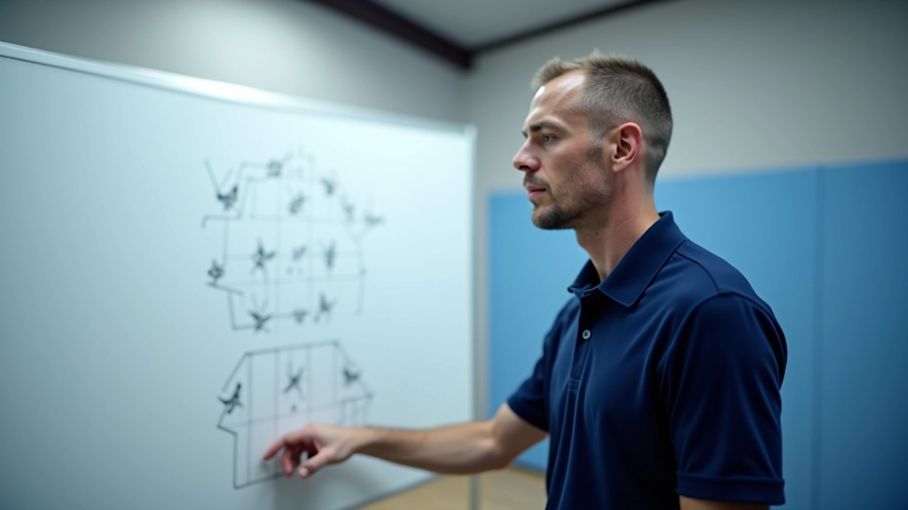

فهم اللعبة بأكثر من الضربات
الكثير من الناشئين يركزون على تطوير ضربات قوية فقط. لكن الحقيقة أن أفضل لاعبي تنس الطاولة يعرفون أن النصر يأتي من الفهم العميق لكيفية قراءة الخصم واستباق حركاته. إنها لعبة عقل قبل أن تكون لعبة أيدٍ.
التكتيكات الأساسية تساعدك على استخدام نقاط قوتك بذكاء. بدلاً من الاعتماد على الضربات العشوائية، ستتعلم كيف تخطط لكل نقطة. هذا يعني فرق كبير بين لاعب يلعب بعشوائية ولاعب يلعب بهدف واضح.
المفهوم الأساسي: التكتيكات ليست عن الحركات المعقدة، بل عن الذكاء في اختيار الضربة المناسبة في اللحظة المناسبة.
